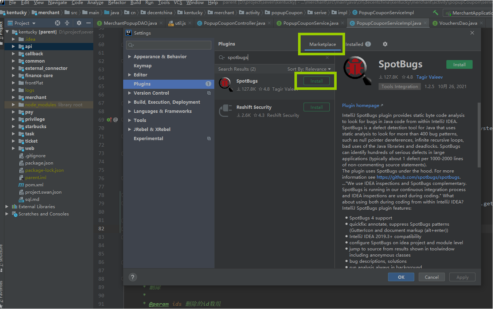
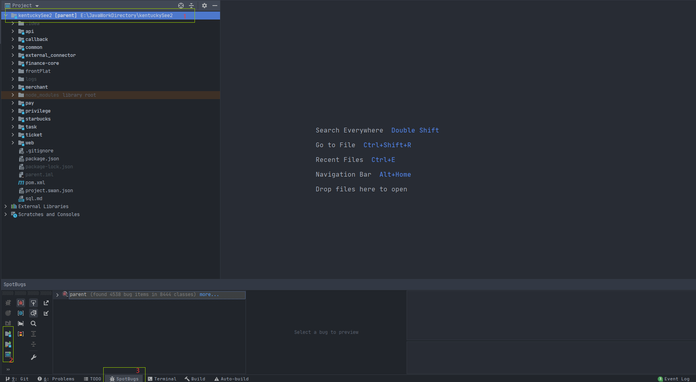

代码规范
前言
代码质量主要依靠代码检查来进行，但当前代码检查占用较多工时。现推荐一个比较成熟的代码检查插件，要求JAVA开发每次提交代码前都应使用插件自检，可以一定程度上减少代码检查所用的时间，帮助开发人员规范编码习惯，提高编码水平，本插件不能替代阿里巴巴开发规范插件，只是对其的补充。
SpotBugs使用说明
安装方法
在IDEA中，点击工具类 File->Settings->Plugins 后，切换到Marketplace标签，在输入框中输入spotbugs，查询到SpotBugs插件，点击install按钮安装插件，如图所示：

使用手册
使用步骤
SpotBugs的使用方式是通过插件扫描代码的方式来检查出代码中隐含的bug，首先切换idea任务栏到SpotBugs下（截图红字3）。SpotBugs主要有两种扫描方式，可全项目扫描或单模块扫描：
- 全项目扫描使用截图红字2中第三个按钮
- 单模块扫描首先选择需要扫描的模块（截图红字1），然后点击截图红字2中第一个按钮
说明：截图红字3中三个按钮依次为：扫描选中模块不包含TEST类；扫描选中模块包含TEST类；扫描全项目

BUG说明
SpotBugs扫描出的问题主要分为几个大类，每个大类中包含多个具体问题，具体问题有自己对应的处理优先级，分为高中低三级。现针对具体问题做解释说明，方便修改错误代码。本文档并未描述SpotBugs支持的全部问题，只针对每个大类列举有特点且较难理解的问题，未在本文档中出现但是被SpotBugs扫描出的问题，开发者也应自行查找处理，附SpotBugs官方校验规则文档
高危（强制修改）
1.1 No relationship between generic parameter and method argument
方法参数和传入参数存在泛型不一致的情况
反例：
1 | List<String> strList = new ArrayList<>(); |
1.2 Call to equals() comparing different types
equals方法比较的双方不是相同类型
反例：
1 | cn.common.enums.OrderStatusEnum.REFUNDED.equals(cn.common.kentucky.enums.OrderStatusEnum.REFUNDED) |
1.3 Nullcheck of value previously dereferenced
空值检查顺序错误
反例：
1 | Order order = OrderDao.getOrder(dto.getId()); |
1.4 A parameter is dead upon entry to a method but overwritten
错误的认为对参数的覆盖会回传给调用者
反例：
1 | private void partialH5Refund(Long id, String refundNo, String content, OrderRefund orderRefund) throws Exception { |
说明：JAVA中当传入参数是对象时，修改对象属性是可以生效的，但是直接赋值覆盖对象的操作，是不会影响原参数的；String类在JAVA中是值传递，对其的修改不会影响原参数。具体有关JAVA值传递和引用传递的相关介绍可参考文章JAVA值传递和引用传递
1.5 Self assignment of clearInterval rather than assigned to field
在setValue中错误的将传参的值赋值给传参
反例：
1 | public void setClearInterval(Long clearInterval) { |
1.6 Class names shouldn’t shadow simple name of superclass
子类名称不应和父类相同
反例：
1 | public class OrderConfig extends cn.kentucky.order.config.OrderConfig |
1.7 Random object created and used only once
推荐使用java.security.SecureRandom代替Random
1.8 Boxing/unboxing to parse a primitive
使用Integer.parse代替Integer.valueOf；Integer.valueOf会涉及多次拆箱装箱操作，经历了String - int - Integer - int的过程
1.9 Reliance on default encoding
使用 new String、 getBytes等方法需要指定编码格式，默认编码格式会因服务所在平台发生改变，这会产生意想不到的问题
正例：
1 | byte[] data = plainText.getBytes(StandardCharsets.UTF_8); |
1.10 HTTP Response splitting vulnerability
禁止将用户提交的参数直接放置到response header上或作为重定向参数，这可能会出现安全漏洞，具体描述参考HTTP Response Splitting
反例：
1 | String referer = request.getHeader("REFERER"); |
中等（强制修改）
2.1 equals method overrides equals in superclass and may not be symmetric
JAVA中当子类使用lombok插件的@Data注解时，必须配上@EqualsAndHashCode(callSuper = true)
说明：@Data默认使用@EqualsAndHashCode(callSuper = false)，当在子类中使用此属性时，调用equals方法只会比较子类的属性，不会比较继承自父类的属性，极易产生不符合预期的结果（网上提示，此注解同时会产生父子类互相调用equals方法结果不相同的问题，即（a.equals(b) == b.equals(a)），但是实测不会产生本问题，因lombok同时生成了canEqual方法）
正例：
1 | @EqualsAndHashCode(callSuper = true) |
2.2 Possible null pointer dereference in method on exception path
当代码经过exception异常处理时，存在可能的空值引用
反例：
1 | Map<String, Object> paramMap = null; |
2.3【推荐】May expose internal representation by incorporating reference to mutable object
不建议当对象中的属性也是对象时，其get和set方法直接进行赋值操作或返回操作，而是set时将传入参数进行拷贝并返回，get时将属性拷贝并返回；如果直接使用传参赋值，会造成修改传参的效果被同步，引起与开发预期不符的问题。具体问题案例可参考属性拷贝
正例：
1 | public class Test3 { |
2.4【推荐】May expose internal representation by returning reference to mutable object
问题同2.3，本问题是不建议直接返回原属性，而是返回属性的拷贝值
2.5 May expose internal representation by returning reference to mutable object
静态集合常量应该是final型的，不允许修改
2.6 Field isn’t final and can’t be protected from malicious code
字段未被final修饰，存在被修改的风险
2.7 Field should be package protected
属性应该用protected保护
2.8 Field is a mutable collection which should be package protected
集合属性应该使用protected保护
2.9 Field isn’t final but should be
属性应该被设置为final
2.10 Field is a mutable array
集合属性存在被修改的风险
正例：涉及2.3-2.8
1 | public class TestMap { |
2.11 Non-transient non-serializable instance field in serializable class
实现序列化的类中存在未实现序列化的属性，推荐类中添加系列化标识
2.12 Serializable inner class
实现了序列化标识的内部类建议都为静态内部类，可以减少序列化时必须要关联外部类的问题
2.13 Method may fail to close stream
使用JAVA的IO流时，必须在finally块中对流进行关闭
2.14 Format string should use %n rather than \n
String的format方法应该使用%n来进行换行
2.15 Useless object created
问题同3.2
2.16 Method may fail to clean up stream or resource on checked exception
JAVA的IO流使用后必须调用关闭方法
2.17 Boxed value is unboxed and then immediately reboxed
JAVA中三目运算时，如果同时存在基本类型和包装类型，JAVA会自动向下转型拆箱，然后最后进行赋值操作时重新装箱
正例：
1 | return this.isTempDrug == null ? Integer.valueOf(0) : this.isTempDrug; |
2.18 Inefficient use of keySet iterator instead of entrySet iterator
遍历map时，如果需要使用到value值时，推荐使用entrySet而不是keySet
反例：
1 | Map<String, String> param = new HashMap<>(); |
低危（建议修改）
3.1 Exception is caught when Exception is not thrown
针对已知异常，根据业务需要分开处理，而不是直接全部归为Exception
正例：
1 | try{ |
3.2 Dead store to local variable
禁止局部变量创建却未使用
3.3 Switch statement found where default case is missing
switch出现条件中未添加break导致进入default的情况
反例：
1 | switch (sendOrderRequest.getOrderStatus()) { |